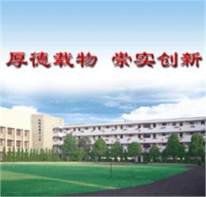
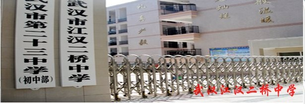
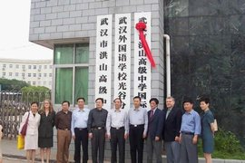
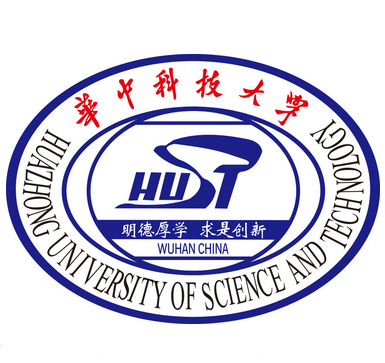

| 小学 | 汉阳区德才小学 | 汉阳区德才小学校园环境优雅，教学设备精良，办学理念先进，教师队伍优秀，具有一流的管理水平和办学水平，拥有良好的社区资源和人文环境，学校的迅速发展受到社会的广泛赞誉和上级领导的充分肯定。 |  |
|---|
| 初中 | 武汉市二桥初中 | 武汉市江汉二桥中学立江汉二桥桥头，临汉水之滨。已有二十余年的办学历史。连年的中考佳绩，赢得了汉阳西部“桥头堡”的美誉，是汉阳西部的一颗璀璨明珠。2006年，区政府、区教育局作出优质教育资源西部重组的战略决策，学校迎来了难得的发展机遇：我校整体并入百年名校二十三中，成为二十三中初中部，走上强强联合办学之路。
学校秉承“阳光教育”办学理念，让学生感受阳光般温暖，让每个学生都有阳光心态。经多年积淀，形成了“礼、真、严、毅”的校风，“乐、思、勤、实”的学风和“爱、容、范.. |  |
|---|
| 高中 | 武汉市第三高中 | 武汉三中创建于1905年，初名清汉阳府晴川书院，后改为湖北省汉阳高中，简称省阳高，现坐落于武汉市汉阳区拦江路150号，为湖北省示范高中、武汉市重点中学、首届汉阳区各校。
|  |
|---|
| 大学 | 华中科技大学 | 华中科技大学是国家教育部直属重点综合性大学，由原华中理工大学、同济医科大学、武汉城市建设学院于2000年5月26日合并成立，是国家“211工程”重点建设和“985工程”建设高校之一，是首批“双一流”建设高校。
学校校园占地7000余亩，园内树木葱茏，碧草如茵，环境优雅，景色秀丽，绿化覆盖率72%，被誉为“森林式大学”。学校教学科研支撑体系完备，各项公共服务设施齐全。 |  |
|---|